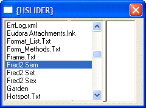

{HSLIDER}
Syntax
{HSLIDER}
Description
The {HSLIDER} command places a vertical bar on the dialog that you can slide horizontally to increase the size of one portion of the dialog while decreasing the size of another portion.
Limitations
Desktop applications only
Example
|
files = filefind.get("c:\*.*",0,"n") ui_dlg_box("{HSLIDER}",<<%dlg% {stretch=width,height} [.20,10file^#files]{hslider}[.20,10contents] %dlg%) |

See Also